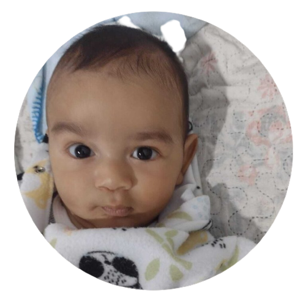

Querido diário,
Hoje eu quero contar como estou feliz por ter nascido na família mais incrível do mundo! Meu nome é Oliver, e sou um garotinho de apenas 4 meses, mas já estou descobrindo um montão de coisas divertidas enquanto cresço com tanto amor à minha volta.
Primeiro, quero te falar sobre meus papais, a Karol e o Lucas. Eles são simplesmente os melhores! A mamãe é tão carinhosa e sempre me abraça com tanto amor. Ela é uma verdadeira especialista em fazer cócegas, e eu dou muitas risadinhas gostosas quando ela brinca comigo. O papai é super atencioso e me divirto muito quando ele faz vozes engraçadas e caras malucas para me fazer sorrir. Eles cantam canções de ninar tão bonitas e engraçadas que me fazem sonhar com coisas maravilhosas e divertidas.
Ah, e meu irmãozinho mais velho, o Kevin, é incrível! Mesmo sendo ainda pequeno, ele já me mostra como é o mundo lá fora. Ele me ensina coisas novas e me protege como um super-herói. Quando ele sorri pra mim, eu sinto que sou a pessoa mais sortuda do universo!
E tem mais, eu sou muito amado pelos meus tios e tias, viu? Eles sempre vêm me visitar, me enchem de beijinhos e me fazem carinhos tão gostosos! Cada encontro é uma festa, cheia de risos e brincadeiras. Principalmente a tia Leninha, que é o meu grudinho pessoal! É tão bom ter uma família assim, que se preocupa tanto comigo e me faz sentir tão especial.
E não posso esquecer dos meus avôs e avós! Eles são como fadas e magos, sempre prontos para me mimar com muito amor e carinho. Quando estou com eles, sinto que estou no lugar mais seguro do mundo, cheio de abraços quentinhos e amor incondicional.
Diário, a cada dia que passa, descubro coisas novas e interessantes ao meu redor. Adoro ver as cores, ouvir os sons, sentir as texturas e experimentar novos sabores. É como se o mundo fosse um grande parque de diversões, e eu sou a criança mais animada de todas!
Estou tão feliz por ser o Oliver, por ter nascido na minha família tão maravilhosa. Com eles, cada dia é uma aventura cheia de amor e aprendizados. E posso te contar um segredo? Meu maior desejo é poder fazer todos eles sorrirem todos os dias, assim como eles fazem comigo. Eu os amo muito, do fundo do meu coraçãozinho de bebê!
Até a próxima aventura, querido diário!
Com amor,
Oliver 💙👶